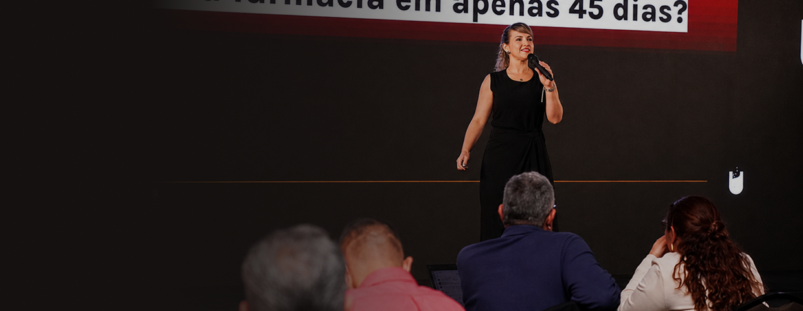
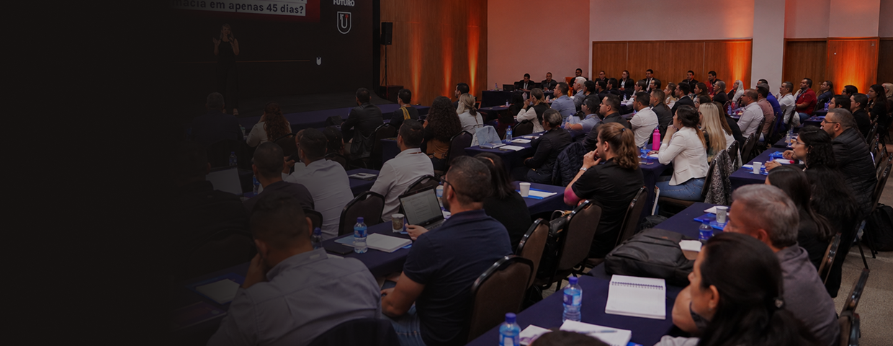

O dono é o gargalo
Tudo passa por ele, e nada anda quando ele não está na loja.
Liderança e gestão no varejo farmacêutico
Mentorias, treinamentos e imersões construídos a partir do Método Wolf Farma, criado dentro da realidade prática de quem opera uma farmácia todos os dias.
anos dentro do varejo farmacêutico, da operação à gestão
líderes e gestores formados em turmas e treinamentos
farmácias e redes acompanhadas em processos de estruturação
pilares que sustentam o Método Wolf Farma
Problemas que parecem ser de venda, de equipe ou de mercado. Na raiz, são de liderança e estrutura de gestão.
Tudo passa por ele, e nada anda quando ele não está na loja.
Cada um faz do seu jeito, e o resultado oscila junto.
Os indicadores existem no sistema, mas ninguém usa para decidir no dia a dia.
Promovidos por tempo de casa, sem nunca terem sido preparados para liderar.
O faturamento subiu, a complexidade dobrou, e a gestão continuou a mesma.
Conteúdo de prateleira que não conversa com a realidade do balcão.
Farmácia não quebra por faltaCinthya Lobo
de venda. Quebra por falta de
gestão e de liderança preparada.
Cinco dimensões que precisam evoluir juntas. É isso que conecta todas as mentorias, treinamentos e formações, e o que garante que o aprendizado vire execução na loja.
Preparar quem conduz a equipe: comunicação, cobrança e delegação.
Padronizar compra, estoque, atendimento e caixa para o resultado parar de oscilar.
Fazer o sistema que já existe gerar decisão, não só relatório.
Plano virando rotina: quem faz, quando faz e como se acompanha.
Ler os números certos no ritmo certo e ajustar a rota antes do fim do mês.
Todas nascem do mesmo método. O que muda é a profundidade, o formato e quem está na sala.
Acompanhamento próximo para proprietários, gestores e líderes que precisam organizar a gestão e melhorar a execução, com encontros ao vivo e direcionamento sobre a realidade da sua farmácia.
Capacitações para equipes, farmácias, redes e grupos, em formatos abertos ou personalizados, construídos a partir do contexto e dos indicadores de quem contrata.

Formação prática construída a partir do Método Wolf Farma, voltada a quem assumiu (ou vai assumir) a liderança de uma equipe de farmácia e precisa de repertório para conduzir.
Dias intensivos, presenciais, com um grupo enxuto de donos e gestores, para sair com diagnóstico, prioridades e plano de execução definidos, não com um caderno de anotações.

O foco é o empresário que está no meio do caminho: já cresceu o suficiente para a desorganização doer, mas ainda não tem uma estrutura que sustente o próximo salto.
Construí minha carreira dentro do varejo farmacêutico: do balcão à gestão, da operação à liderança de equipes e redes. Foi ali, na prática, que entendi que a maior parte dos problemas que os donos me traziam não era de venda: era de estrutura, de processo e de gente despreparada para liderar.
Do acúmulo dessa experiência nasceu o Método Wolf Farma: uma forma de organizar o desenvolvimento de líderes, os processos, o uso da tecnologia, a execução e a leitura de resultado em um sistema só. Hoje, é ele que sustenta todas as minhas mentorias, treinamentos e formações.
Meu trabalho não é entregar teoria bonita. É fazer com que o dono da farmácia consiga tomar decisões melhores, com uma equipe que executa, e com números que ele finalmente entende.
Turmas, imersões e treinamentos com data aberta. As inscrições e o pagamento acontecem em ambiente externo.
Dois dias intensivos para donos e gestores saírem com diagnóstico, prioridades e plano de execução definidos.
17 e 18 de outubro · São Paulo, SP Ver eventoAcompanhamento em grupo reduzido para organizar gestão e execução mês a mês, com plano revisado a cada ciclo.
Turmas mensais · Online ao vivo Ver eventoFormação prática de liderança para quem conduz equipe de farmácia e precisa de repertório para cobrar e desenvolver.
Início em novembro · Online ao vivo Ver eventoDepoimento a ser coletado com a cliente. Espaço reservado para o relato de um proprietário sobre a mudança na rotina de gestão depois da mentoria.
Nome do cliente Proprietário · Farmácia · Cidade/UFDepoimento a ser coletado com a cliente. Espaço reservado para o relato de um gestor sobre o impacto do treinamento na equipe de loja.
Nome do cliente Gestor · Rede · Cidade/UFDepoimento a ser coletado com a cliente. Espaço reservado para o relato de um participante do Essencial Líder Farma.
Nome do cliente Líder de loja · Cidade/UF